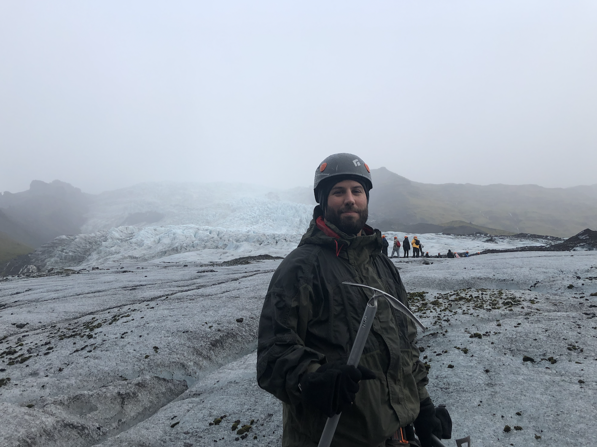

About Welsh’s Survival Science
At Welsh’s Survival Science, we believe learning should be more than memorizing facts. Our curriculum blends high-quality science instruction with real-world survival skills—helping students explore, think critically, and thrive in every environment.
Founded by science teacher and outdoor adventurer Mr. Welsh, this platform equips educators with hands-on tools to bring chemistry, biology, and physics to life—whether in the classroom or the wild.
Ready to explore? Let’s turn learning into an unforgettable adventure.